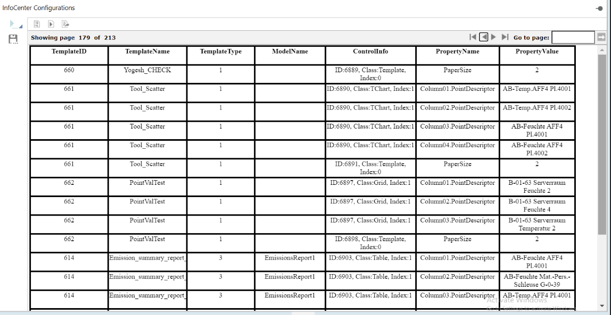
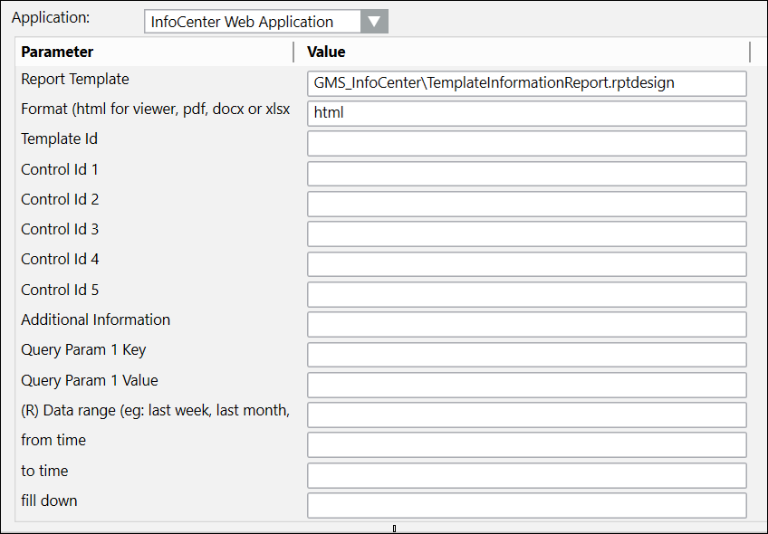

Template Information Report
This custom report is run when you want to create a new web rule and need the required parameters to do so. The Template Information Report can display the parameters for all existing templates on the connected InfoCenter server, or, if a specific report name is entered, only the parameters related to that report.
Sample Report

Legend
Name | Description |
Template ID | A unique id that is generated whenever a new report is created. |
Template Name | The name of the template. |
Template Type | Custom Report = 1 Standard Report = 3 NOTE: There are no other Template Type values. |
ModelName | Chiller, Ahu, etc. This field is blank for custom reports. |
ControlInfo | For every particular type of control that is created there is a specific control ID Classification, for example: HChart (Bar) TChart (Scatter) Index value can be 1, 2, or 3 to indicate the number of graphs that are present, |
Property Name | A property descriptor. FillDown, PaperSize, the value that is set in InfoCenter and Value for those are Y(es) or N(o) or the measurement. |
Property Value | The point name displayed in the report. |
Sample Parameter
